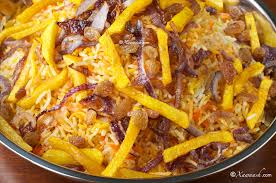
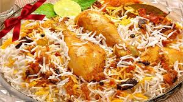
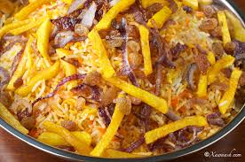
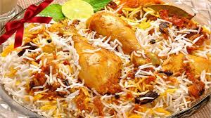
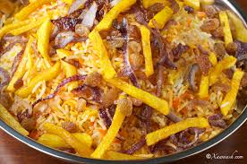
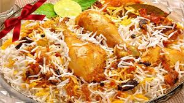

At the heart of every one of our dishes is a bespoke mix of spices, from Lulu's traditional family masala recipe to specially created blends guaranteed to delight all the senses.
The menu, the ease of use, and the mouthwatering food delivered at your door step. The food of Lulu's Kitchen will definitely take you back to your childhood days and there will be something that you will relate to and that will make you feel attached to the site. Be it the morning breakfast that your Mom gave you, or the typical chicken that you once ate in Nairobi when it was raining heavily you will get it here.I leave it to you to discover your connect but with a promise you wont regret your visit to this our site.
Brought to life, and beautifully presented on the plate, by our talented executive chefs, Lulu’s menu icludes culinary heritage and regional specialities while playing with modern techniques and in-demand ingredients.
Sustainably farmed chicken, and an ever-growing basket of seasonal organic products represent our commitment to quality and taste with every dish we prepare.

